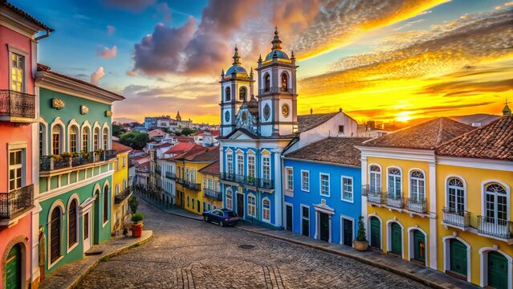
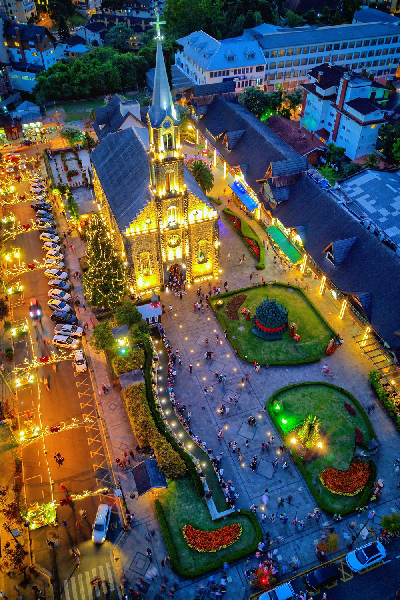
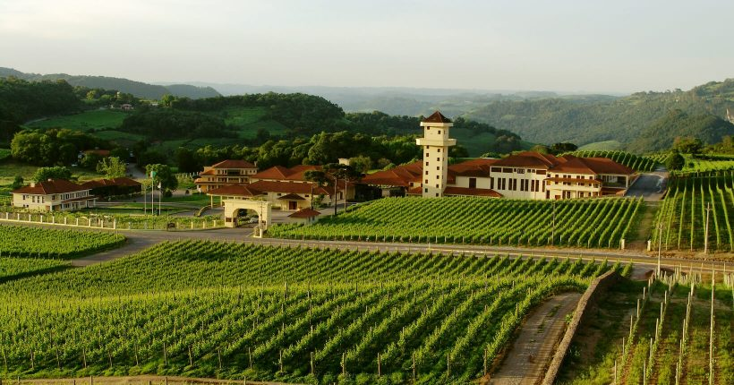
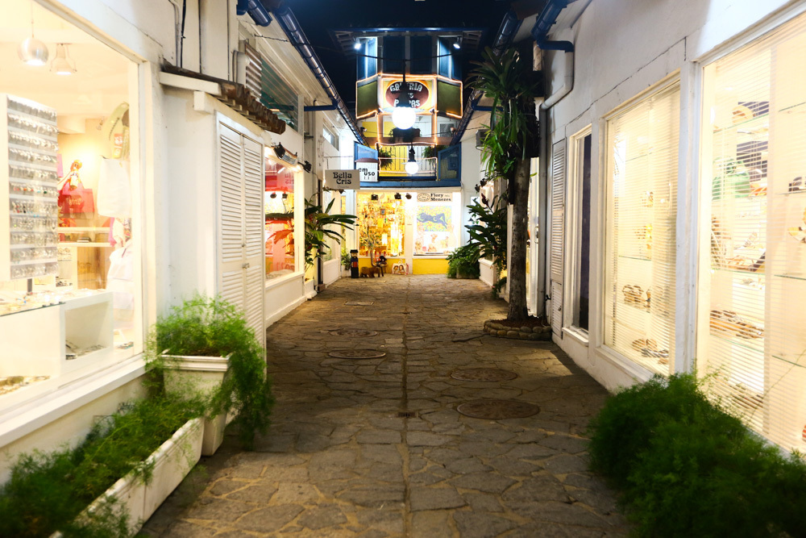

Conheça Nossos Destinos
Escolhemos três estados incríveis do Brasil para você conhecer e se planejar para viajar!
Bahia
O estado do axé, das praias e da cultura afro-brasileira
A Bahia é um dos estados mais famosos do Brasil. Conhecida pelas suas praias bonitas, pela música, pela comida e pela cultura afro-brasileira muito forte. A capital Salvador tem o centro histórico mais preservado da América Latina e o Carnaval mais famoso do país, que reune mais de 2 milhões de pessoas nas ruas todo ano.
Além de Salvador, a Bahia tem destinos como Morro de São Paulo, Porto Seguro e a Chapada Diamantina que são muito procurados por turistas nacionais e internacionais.
Principais cidades para visitar
- Salvador – capital do estado, Pelourinho, Elevador Lacerda
- Porto Seguro – praias lindas e vida noturna agitada
- Morro de São Paulo – ilha paradisíaca, não tem carro
- Lençóis – entrada para a Chapada Diamantina
Hotéis famosos na Bahia
Fera Palace Hotel ★★★★★
Localização: Salvador, Centro Histórico
Hotel histórico famoso de Salvador, funciona desde 1934 e fica no coração do Pelourinho. Foi restaurado e hoje tem muito luxo e conforto.
Txai Resort Itacaré ★★★★★
Localização: Itacaré, Costa do Cacau
Resort ecológico de luxo com bangalôs no meio da mata perto do oceano. Um dos melhores resorts da América Latina segundo várias revistas de turismo.
Vila Selvagem ★★★★
Localização: Porto Seguro
Pousada bem bonita perto das melhores praias do sul da Bahia. Boa para quem quer conforto sem gastar tanto quanto num resort.
Fotos da Bahia


Vídeo sobre a Bahia
Rio Grande do Sul
Tradição gaúcha, vinhos e a Serra mais bonita do Brasil
O Rio Grande do Sul é um estado muito diferente dos outros. Tem muita influência europeia por causa dos imigrantes italianos e alemães que chegaram no século XIX. É o estado do chimarrão, do churrasco gaúcho e dos vinhos finos produzidos na Serra Gaúcha.
Gramado e Canela são as cidades mais visitadas, famosas pelas construções que parecem que você está na Europa. No inverno tem o Natal Luz que é um evento enorme e muito bonito. Já em Bento Gonçalves você faz passeios de trem e visita as vinícolas.
Principais cidades para visitar
- Gramado – arquitetura europeia, chocolates, festivais
- Canela – Cascata do Caracol e Parque do Caracol
- Bento Gonçalves – capital brasileira do vinho
- Porto Alegre – capital do estado, tem bastante cultura e gastronomia
Hotéis famosos no Rio Grande do Sul
Serra Azul Gramado ★★★★★
Localização: Gramado, Serra Gaúcha
Resort de montanha com spa e piscinas aquecidas. Tem uma vista linda para as montanhas da Serra Gaúcha. Muito procurado no inverno.
Casa Valduga Wine Resort ★★★★★
Localização: Vale dos Vinhedos, Bento Gonçalves
Hotel no meio dos vinhedos com degustação de vinho inclusa. A gastronomia é italiana e muito boa. Uma experiência diferente.
Pousada Colina dos Pinheiros ★★★★
Localização: Canela, Serra Gaúcha
Pousada aconchegante em Canela, perto das principais atrações. Boa opção para quem quer custo-benefício na Serra Gaúcha.
Fotos do Rio Grande do Sul


Vídeo sobre o Rio Grande do Sul
Minas Gerais
História, arte barroca e a melhor comida do Brasil
Minas Gerais é famoso pela hospitalidade do povo mineiro e pela culinária considerada por muitos como a melhor do Brasil. O estado tem várias cidades históricas que são patrimônio da humanidade, como Ouro Preto, Tiradentes e Diamantina, que guardam a história do ciclo do ouro no Brasil.
Além das cidades históricas, Minas tem o queijo artesanal mineiro que é reconhecido mundialmente, o pão de queijo famoso em todo o país e cachaças artesanais de qualidade. A capital Belo Horizonte também tem uma cena gastronômica muito forte.
Principais cidades para visitar
- Ouro Preto – patrimônio mundial da UNESCO, arte barroca do Aleijadinho
- Tiradentes – cidade colonial muito charmosa, gastronomia premiada
- Diamantina – patrimônio da humanidade, cidade natal do presidente JK
- Belo Horizonte – capital, tem muita cultura, música e boa comida
Hotéis famosos em Minas Gerais
Solar do Rosário ★★★★★
Localização: Ouro Preto, Centro Histórico
Hotel em um casarão colonial do século XVIII. A decoração mistura história com conforto moderno. Fica bem pertinho da Igreja do Rosário.
Pousada dos Inconfidentes ★★★★★
Localização: Tiradentes
Pousada histórica no centro de Tiradentes. O café da manhã é muito farto e tem muita coisa típica de Minas. Ambiente tranquilo e romântico.
Ouro Minas Palace Hotel ★★★★
Localização: Belo Horizonte
Hotel grande na capital mineira, bom para quem vai a BH a trabalho ou turismo. Fica bem localizado e tem restaurante no hotel.
Fotos de Minas Gerais

